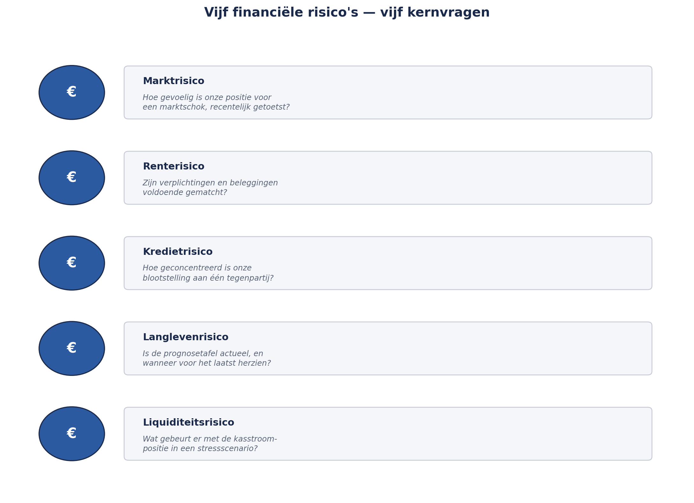

Deel 26 — Financieel risico voor niet-actuarissen
Niveau 3 — Expert · Slidedeck (22 slides)
Slide 1 — Titel
Risicomanagement Deel 26 — Financieel risico voor niet-actuarissen
Niveau 3: Expert
Slide 2 — Terugblik
Verantis geïntroduceerd. BCM-hiaat vastgelegd.
Vandaag: Sanne zit bij de actuariële presentatie.
Slide 3 — “Ik ben geen actuaris”
Ze hoeft de berekening niet te controleren.
Ze moet de aannames bevragen.
Slide 4 — Model bevragen, niet bouwen
Volledig uitgewerkt — vandaag.
Slide 5 — Vijf financiële risico’s
Markt · Rente · Krediet
Slide 6 — Vijf risico’s, vervolg
Langleven · Liquiditeit
Slide 7 — Marktrisico
“Hoe gevoelig zijn we voor een marktschok?”
Slide 8 — Renterisico
Beleggingen én verplichtingen bewegen — matchen ze wel?
Slide 9 — Kredietrisico
“Hoe geconcentreerd is onze blootstelling aan één tegenpartij?”
Slide 10 — Langleven- en liquiditeitsrisico
“Is de tafel actueel?” · “Wat gebeurt er met onze kasstroom onder stress?”
Slide 11 — Figuur 26-1

Slide 12 — Opdracht 26.1 — 20 minuten
Vier scenario’s. Welk risico, welke vraag?
Slide 13 — Aggregatie
Niet optellen — risicokapitaal, met correlatie.
Slide 14 — Het spiegelbeeld van deel 17
Daar: optellen onderschat.
Hier: optellen overschat.
Slide 15 — Zelfde onderliggende fout
Correlatie negeren — in beide richtingen.
Slide 16 — Opdracht 26.2 — tweetallen, 20 minuten
Waarom over- en waarom onderschatting? Wat hebben ze gemeen?
Slide 17 — Value at Risk (VaR)
Het verlies dat, met 99,5% kans, niet wordt overschreden.
Slide 18 — Wat VaR niet zegt
Niets over de resterende 0,5%.
Precies waar de catastrofe zit.
Slide 19 — Vijf vragen om te bevragen
Aannames + wanneer herzien? Alternatieve aanname?
Slide 20 — Vijf vragen, vervolg
Vergelijking met anderen? 10%-gevoeligheid? Onafhankelijk gevalideerd?
Slide 21 — Kernzin 19
Je hoeft een model niet te kunnen bouwen om het te mogen wantrouwen — je moet alleen weten welke vraag de aanname blootlegt.
Slide 22 — Voor deel 27
Toegepast: projectierendement aan de bovenkant van de sector — nu een punt voor de tweedelijnsopinie.
Deel 27: scenario’s, stresstesten, ORSA/ERB, modelrisico.